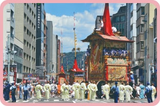

지역별 대표 마쓰리
지역별 대표 마쓰리
기온(ぎおん) 마쓰리

매년 7월 교토의 기온에서 열리는 ‘야사카(やさか) 신사’의
마쓰리로, 산 모양의 장식대 위에 창이나 칼을 꽂은 화려한
수레인 ‘야마보코(やまぼこ)’가 전통 악기의 연주에 맞춰 줄
지어 행진하는 행사가 유명하다. ‘야마보코’에는
화려하고 고풍스러운 미술 작품이 많이 장식
되어 있어 움직이는 미술관으로 불리기도 한다.